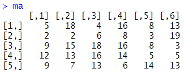
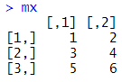
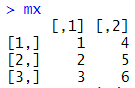
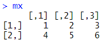
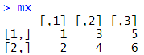
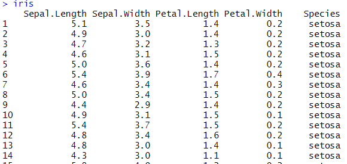
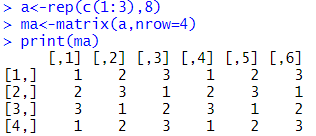

ADsP 문제 풀이 4일차
R 행렬
1. 아래의 행렬이 주어졌을 때, 명령문과 그 결과가 올바르게 연결된 것은?

ma[2,3] = 15
ma[4,5] = 5
ma[5,1] = 8
ma[6,3] = 3
2. R에서 matrix 명령어를 활용하여 벡터를 행렬로 아래와 같이 변환하였다고 할 때 생성된 mx의 결과로 옳은 것은?
mx = matrix(c(1,2,3,4,5,6), ncol=2, byrow=T)




3. 다음 중 아래 보기의 코드에 대하여 바르게 설명한 것은?
matrix(c(1:12), nrow=3)[2,-3]
설정값이 byrow=T 이다.
행이 4개 열이 3개인 행렬을 만든뒤 값을 추출한다.
결과 값은 2 5 11 인 벡터이다.
에러가 발생하여 실행이 중지된다.
4. 아래의 데이터 프레임에서 값이 다른 하나는 무엇인가?

iris[1,]
iris[,'Sepal.Length']
iris$Sepal.Length
iris[,-c(2:5)]
5. 아래의 행렬이 주어졌을 때, 다음 중 값이 다른 하나는 무엇인가?

ma[2,-3][5]
ma[-2,4][1]
ma[4,-5][2]
ma[3,-2][4]
제출하기